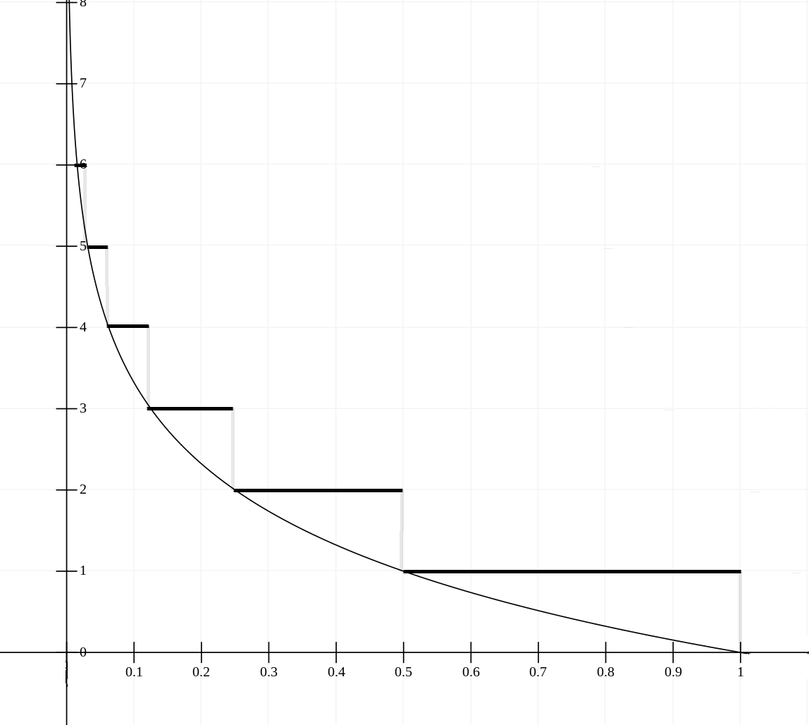

Many sources describing skip lists implementations take an algorithmic approach to select a random level in a skip list with correct distribution, where a random generator is ran in a loop or some obscure bit arithmetics is employed. A simpler purely mathematical approach exists, however it's not generally known or understood. In this short article it will be explained and demonstrated.
A level \(N\) in a skip list has a probability of occurrence \(1 \over 2^N\)
Interestingly, this is the same probability distribution that a coin will fall on the same side \(N\) times in a row. Psedo-random number generators, available in most programming environments, have a uniform probability distribution on \( \left[ 0,1 \right) \) or some \( \left[ 0,Maximum \right) \) range. This uniform probability distribution can be used to simulate any other distribution by mapping it with a function.
The function we will construct will not be a programming function, as in a sequence of steps to perform on data, but a relation. Then we will proceed to discover a computation that represents this relation and can be used in a program.
A function is a mapping between a domain and co-domain. A domain in our case is some real number on \( \left[ 0,1 \right) \) range. A co-domain are positive integers on intervals \( \left[ 0,\infty \right) \) or \( \left[ 1,\infty \right) \), depending on whether levels are indexed from \(0\) or \(1\), respectively.
\[f:U \rightarrow L\]There's no limit to how many levels we can have. In practice we will simply clamp levels to some maximum. The number of maximum levels allowed in the implementation should not affect the probability distribution, so we can ignore this fact safely.
A function is called onto(surjective), if every element of co-domain is mapped onto by the function. The function we are looking for is definitely an onto function. But again, in practice it will not be an onto function due to clamping.
A function is called one-to-one(injective), if every element of co-domain is mapped to by only one element element from the domain. The function we are looking for will not be a one-to-one function, because in order to create a non-uniform distribution from a uniform we have to map multiple elements from the domain to same value in co-domain, whereby increasing their probability of occurrence.
Let's illustrate how portions of uniform range are mapped to levels:
Level \(1\) has probability \(1 \over 2\), hence half the range is mapped to it. Level \(2\) has probability \(1 \over 4\), so a quarter of range is dedicated to it. It goes on in the same way to infinity. It's interesting to note, that it doesn't actually matter which portion of the uniform range is mapped to which level, as long as there's right proportion of it. For instance it doesn't matter if the \( 1 \over 2 \) portion mapped to level \( 1 \) is continious or scattered over a million bits, as long as there's exactly \( 1 \over 2 \) of it somewhere in total. This gives us some flexibility in how we construct the function.
Plotting those values on a graph, reveals a pattern, if it wasn't obvious yet. The function we are looking for maps increasing powers of \( 1 \over 2\) to their corresponding exponents. What power of \( 1 \over 2\) takes it to number x? That question is answered by logarithm of \( x \) base \( 1 \over 2\).
The values of logarithm are conflated into integers using either a ceiling or floor functions. Ceiling produces \(1\) based indices(shown on the graph):
\[ f\left( x \right) = \left\lceil \log _{ 1 \over 2 }{ x } \right\rceil \]Floor conflates to \(0\) based indices:
\[ f\left( x \right) = \left\lfloor \log _{ 1 \over 2}{ x } \right\rfloor \]Logarith of base \( 1 \over 2 \) can be represented in terms of natural logarithm (base \(e\)), which is what's available in most standard libraries.
\[ \log _{ \, 1/2 }{ x } =\frac { ln{ \, x } }{ ln{\, 1 \over 2} } \]Notice that the lower term is a constant, so it could be easily optimized in a program.
This is really it! To use this function simply use a standard pseudo-random number generator to produce input values, normalize them into \( \left[ 0,1 \right) \) range, if they are not already normalized. The function will simulate correct probability distribution as it maps a uniform random number into a skip list level. This was accomplished by mapping domain to co-domain with correct proportions. Clamp produced level to maximum allowed level in your implementation.